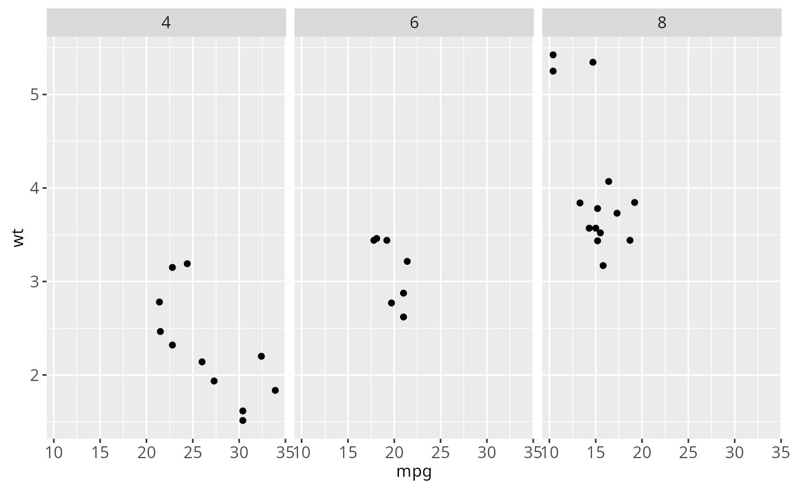

Benchmark plot creation time. Broken down into construct, build, render and draw times.
Source:R/bench.r
benchplot.RdBenchmark plot creation time. Broken down into construct, build, render and draw times.
Examples
benchplot(ggplot(mtcars, aes(mpg, wt)) + geom_point())
#> step user.self sys.self elapsed
#> 1 construct 0.003 0 0.003
#> 2 build 0.010 0 0.010
#> 3 render 0.015 0 0.016
#> 4 draw 0.035 0 0.035
#> 5 TOTAL 0.063 0 0.064
benchplot(ggplot(mtcars, aes(mpg, wt)) + geom_point() + facet_grid(. ~ cyl))

#> step user.self sys.self elapsed
#> 1 construct 0.002 0 0.002
#> 2 build 0.020 0 0.020
#> 3 render 0.050 0 0.051
#> 4 draw 0.062 0 0.063
#> 5 TOTAL 0.134 0 0.136